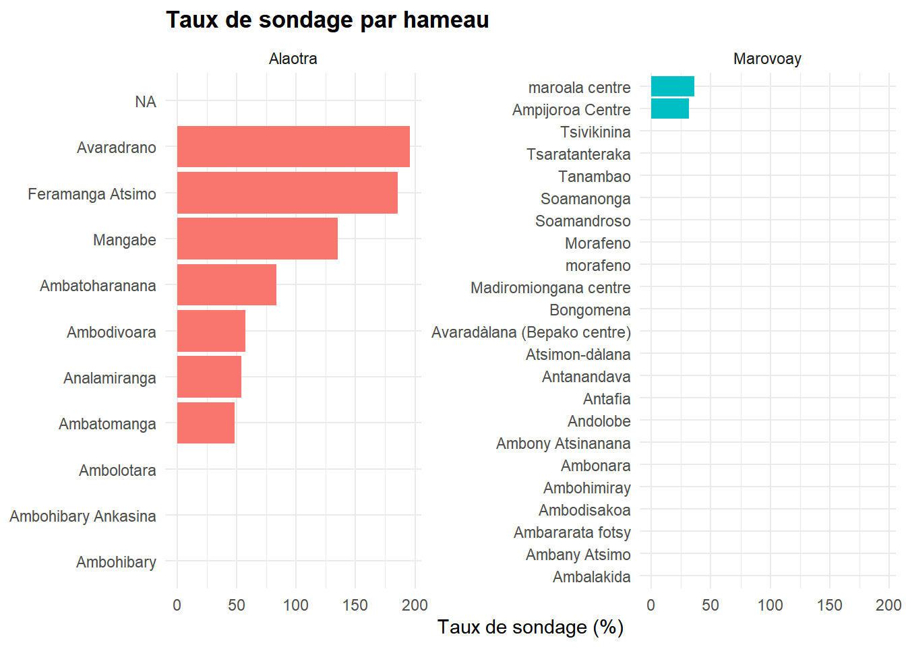

Les résultats présentés ci-dessous sont provisoires, et sont susceptibles de faire l’objet de corrections.
Ce chapitre propose un diagnostic de la représentativité de l’échantillon 2025 et discute des stratégies de pondération envisageables. L’enjeu est double : (i) corriger les biais d’échantillonnage liés aux taux de sondage inégaux entre hameaux et (ii) évaluer dans quelle mesure l’échantillon est représentatif de la population des zones d’étude, en s’appuyant sur le dénombrement et sur le RGPH 2018 (INSTAT 2020).
L’approche s’appuie sur les méthodes standards d’inférence à partir d’enquêtes par sondage (Lumley 2010; Särndal, Swensson, and Wretman 2003) et le package survey pour R (Lumley 2004, 2023). Une vue d’ensemble des outils disponibles est proposée par la CRAN Task View Official Statistics(Templ 2024).
2.1 Plan de sondage
2.1.1 Structure de l’échantillon
Les observatoires ruraux reposent sur un plan de sondage à deux degrés dans lequel les hameaux constituent les unités primaires de sondage (UPS) et les ménages les unités secondaires. Au sein de chaque UPS, un tirage systématique est opéré à partir de la liste de dénombrement.
En 2025, après dix ans d’interruption, l’échantillon a été reconstitué via un nouveau dénombrement exhaustif suivi d’un tirage de ménages. Une partie des ménages tirés sont d’anciens ménages du panel (identifiés par leur numéro), tandis que d’autres sont entièrement nouveaux. Cette structure mixte implique que les probabilités d’inclusion varient d’un hameau à l’autre.
2.1.2 Taux de sondage par hameau
Le taux de sondage varie sensiblement d’un hameau à l’autre. Pour produire des estimations non biaisées à l’échelle de l’observatoire, chaque ménage doit recevoir une pondération inversement proportionnelle à sa probabilité d’inclusion (Kish 1965; Lohr 2022).
Code
# Ménages enquêtés par hameau (j4 = nom du hameau)enquetes_ham <- res_deb |>count(Observatory, j4, name ="n_enquetes")# Ménages dénombrés par hameaudenom_ham <- enum_all |>group_by(Observatory, Hameau) |>summarise( n_denombrés =sum(`Nbr ménage D`, na.rm =TRUE),.groups ="drop" )# Tentative d'appariement# Les noms de hameaux peuvent différer entre les deux sources.# Nous construisons une clé normalisée pour faciliter le rapprochement.normalize_name <-function(x) { x |>str_to_lower() |> stringi::stri_trans_general("Latin-ASCII") |>str_squish()}enquetes_ham <- enquetes_ham |>mutate(key =normalize_name(j4))denom_ham <- denom_ham |>mutate(key =normalize_name(Hameau))sampling <- denom_ham |>left_join(enquetes_ham, by =c("Observatory", "key")) |>mutate(n_enquetes =replace_na(n_enquetes, 0),taux_sondage =ifelse(n_denombrés >0,round(n_enquetes / n_denombrés *100, 1), NA_real_),poids_base =ifelse(n_enquetes >0, n_denombrés / n_enquetes, NA_real_) )sampling |>select(Observatory, Hameau, n_denombrés, n_enquetes, taux_sondage, poids_base) |>arrange(Observatory, Hameau) |>gt(groupname_col ="Observatory") |>cols_label(Hameau ="Hameau", n_denombrés ="Ménages dénombrés",n_enquetes ="Ménages enquêtés",taux_sondage ="Taux de sondage (%)",poids_base ="Poids de base" ) |>fmt_number(columns =c(taux_sondage, poids_base), decimals =1) |>tab_source_note(source_note =md("**Source** : Synthèse Dénombrement OR 2025 & Enquête 2025") ) |>tab_style(style =list(cell_text(weight ="bold"), cell_fill(color ="#DCDCDC")),locations =cells_column_labels(columns =everything()) )
Table 2.1: Taux de sondage par hameau
Hameau
Ménages dénombrés
Ménages enquêtés
Taux de sondage (%)
Poids de base
Alaotra
Ambatoharanana
37
31
83.8
1.2
Ambatomanga
141
68
48.2
2.1
Ambodivoara
101
58
57.4
1.7
Ambohibary
59
0
0.0
NA
Ambohibary Ankasina
34
0
0.0
NA
Ambolotara
19
0
0.0
NA
Analamiranga
85
46
54.1
1.8
Avaradrano
46
90
195.7
0.5
Feramanga Atsimo
48
89
185.4
0.5
Mangabe
54
73
135.2
0.7
NA
5586
0
0.0
NA
Marovoay
Ambalakida
156
0
0.0
NA
Ambany Atsimo
131
0
0.0
NA
Ambararata fotsy
126
0
0.0
NA
Ambodisakoa
98
0
0.0
NA
Ambohimiray
92
0
0.0
NA
Ambonara
66
0
0.0
NA
Ambony Atsinanana
162
0
0.0
NA
Ampijoroa Centre
130
41
31.5
3.2
Andolobe
34
0
0.0
NA
Antafia
50
0
0.0
NA
Antanandava
150
0
0.0
NA
Atsimon-dàlana
52
0
0.0
NA
Avaradàlana (Bepako centre)
132
0
0.0
NA
Bongomena
58
0
0.0
NA
Madiromiongana centre
80
0
0.0
NA
Morafeno
221
0
0.0
NA
Soamandroso
147
0
0.0
NA
Soamanonga
29
0
0.0
NA
Tanambao
158
0
0.0
NA
Tsaratanteraka
93
0
0.0
NA
Tsivikinina
146
0
0.0
NA
maroala centre
69
25
36.2
2.8
morafeno
126
0
0.0
NA
Source : Synthèse Dénombrement OR 2025 & Enquête 2025
Code
sampling |>filter(!is.na(taux_sondage)) |>ggplot(aes(x =reorder(Hameau, taux_sondage), y = taux_sondage,fill = Observatory)) +geom_col() +coord_flip() +facet_wrap(~Observatory, scales ="free_y") +labs(x =NULL, y ="Taux de sondage (%)", fill ="Observatoire",title ="Taux de sondage par hameau") +theme_minimal() +theme(plot.title =element_text(face ="bold"),legend.position ="none")

Figure 2.1: Distribution des taux de sondage par hameau et observatoire
NotePoids de sondage de base
Le poids de base (ou poids de design) de chaque ménage est l’inverse du taux de sondage de son hameau : \(w_i = N_h / n_h\), où \(N_h\) est le nombre de ménages dénombrés dans le hameau \(h\) et \(n_h\) le nombre de ménages enquêtés. Ce poids permet d’obtenir des estimations sans biais du total pour l’ensemble de la zone couverte par l’observatoire (Kish 1965).
2.2 Objet svydesign et estimations pondérées
Nous définissons un objet svydesign en spécifiant les hameaux comme strates (le tirage étant systématique au sein de chaque hameau). Dans la mesure où les hameaux sont exhaustivement couverts (il ne s’agit pas d’un tirage d’UPS), on considère chaque hameau comme une strate avec un tirage à un seul degré.
Table 2.2: Taille moyenne des ménages : estimation non pondérée vs. pondérée
Observatoire
Non pondéré
Pondéré
Moyenne
ET / ES
Moyenne
ET / ES
Alaotra
3.90
1.65
3.93
0.09
Marovoay
4.43
2.20
4.47
Inf
ET = écart-type (non pondéré) ; ES = erreur standard (pondéré)
L’écart entre les deux estimations indique dans quelle mesure les taux de sondage inégaux affectent les statistiques. Un écart faible suggère un plan approximativement auto-pondéré ; un écart important justifie l’usage systématique des poids.
2.3 Comparaison avec le RGPH 2018
Pour évaluer la représentativité externe de l’échantillon, nous comparons certaines caractéristiques de l’échantillon OR avec les données du 3e Recensement Général de la Population et de l’Habitation (RGPH-3) de 2018 (INSTAT 2020). Le RGPH fournit un échantillon de 10 % des ménages et résidents au niveau national.
NoteLimites de la comparaison
Le RGPH-3 est un recensement de droit (population résidente habituelle). L’enquête des observatoires, de son côté, interroge les ménages présents dans les hameaux au moment de l’enquête. Les périmètres géographiques ne coïncident pas exactement : le RGPH couvre des communes entières tandis que les OR portent sur des hameaux sélectionnés au sein de ces communes. Les comparaisons ci-dessous doivent donc être lues comme des ordres de grandeur, non comme des tests formels de représentativité.
Table 2.3: Comparaison OR 2025 vs. RGPH 2018 — Indicateurs clés
Observatoire
Taille moy. ménage
% femmes CM
Âge moyen CM
OR 2025
RGPH 2018
OR 2025
RGPH 2018
OR 2025
RGPH 2018
Alaotra
3.9
4.3
21.7 %
27.2 %
45.4
39.7
Marovoay
4.4
4.0
22.0 %
24.6 %
46.1
40.2
Sources : Enquête OR 2025 ; RGPH-3 2018 (INSTAT), échantillon 10 %. RGPH : régions Alaotra-Mangoro et Boeny (ensemble, pas uniquement les communes des OR).
Code
cat("::: {.callout-important}\n## Données RGPH non disponibles\n\n","Les fichiers SPSS du RGPH 2018 n'ont pas été trouvés dans ","`data/RGPH_2018_Madagascar/data/`. La comparaison n'a pas pu être ","effectuée.\n:::\n")
2.4 Pistes de calage (calibration)
Au-delà des poids de sondage de base, une calibration (ou calage sur marges) permettrait d’ajuster les poids de l’échantillon OR pour que la distribution pondérée de certaines variables auxiliaires corresponde exactement aux totaux connus dans la population (Deville and Särndal 1992; Haziza and Beaumont 2017). Les sources de calage envisageables sont :
Dénombrement 2025 : nombre total de ménages et de toits par hameau. Le calage le plus simple consiste à utiliser le poids de base calculé ci-dessus (\(w_i = N_h / n_h\)), qui cale déjà l’effectif de ménages par hameau.
RGPH 2018 : si les données sont disponibles à un niveau géographique suffisamment fin (district ou commune), on peut caler sur la distribution par sexe, âge ou taille du ménage. Cela corrige les éventuels biais de couverture. L’écart temporel (2018 → 2025) est toutefois une limite.
Enquêtes emploi INSTAT : les enquêtes nationales sur l’emploi (ENEMPSI) fournissent des distributions régionales de la population active par secteur et catégorie socio-professionnelle (CSP). Un calage sur ces marges améliorerait la représentativité sectorielle de l’échantillon.
La calibration peut être réalisée avec survey::calibrate()(Lumley 2010) ou la fonction calib() du package sampling(Templ 2024). La méthode de Deville and Särndal (1992) (calage linéaire, raking ou logit) minimise la distance entre les poids initiaux et les poids finaux tout en respectant les contraintes de marges.
Code
# --- Exemple de calibration (non exécuté) ---# Si l'on dispose des totaux par hameau issus du dénombrement# et d'une variable auxiliaire (par ex. le nombre de ménages),# la calibration se ferait ainsi :# Totaux population par hameaupop_totals <- sampling |>filter(!is.na(n_denombrés)) |>transmute(j4 = Hameau, N_h = n_denombrés)# Calibration (méthode raking)design_cal <-calibrate( design_or,formula =~j4,population = pop_totals,calfun ="raking")# Les nouveaux poids sont accessibles via weights(design_cal)
TipRecommandations
Usage systématique des poids de base : pour toutes les statistiques descriptives publiées, appliquer les poids \(w_i = N_h / n_h\) afin de corriger les taux de sondage inégaux entre hameaux.
Calibration sur le RGPH : si les données RGPH au niveau district/commune sont disponibles, un calage sur l’âge, le sexe et la taille du ménage renforcerait la représentativité externe.
Prudence dans les comparaisons temporelles : la rupture du panel (2015–2025) et le renouvellement complet de l’échantillon empêchent de distinguer les évolutions réelles des effets de composition. Les analyses longitudinales doivent signaler cette limite (cf. Section 3.4).
Analyse de sensibilité : comparer les résultats pondérés et non pondérés pour chaque indicateur clé. Si les écarts sont faibles, le plan est approximativement auto-pondéré et la pondération a un impact limité.
2.5 Références méthodologiques
La littérature sur la pondération et la calibration en enquêtes par sondage est vaste. Voici les ouvrages et articles de référence utilisés dans ce chapitre :
Kish (1965) : fondamentaux du plan de sondage et des poids.
Särndal, Swensson, and Wretman (2003) : théorie unifiée de l’estimation assistée par modèle.
Deville and Särndal (1992) : méthode de calibration (calage sur marges).
Lumley (2010) : guide pratique avec le package survey pour R.
Haziza and Beaumont (2017) : revue des méthodes de construction des poids.
Lohr (2022) : manuel de référence sur l’échantillonnage.
Kott (2006) : calage pour corriger la non-réponse.
Deville, Jean-Claude, and Carl-Erik Särndal. 1992. “Calibration Estimators in Survey Sampling.”Journal of the American Statistical Association 87 (418): 376–82. https://doi.org/10.1080/01621459.1992.10475217.
Haziza, David, and Jean-François Beaumont. 2017. “Construction of Weights in Surveys: A Review.”Statistical Science 32 (2): 206–26. https://doi.org/10.1214/16-STS608.
INSTAT. 2020. “Troisième Recensement Général de La Population Et de l’habitation (RGPH-3) : Résultats Provisoires.” Antananarivo, Madagascar: Institut National de la Statistique.
Kish, Leslie. 1965. Survey Sampling. New York: John Wiley & Sons.
Kott, Phillip S. 2006. “Using Calibration Weighting to Adjust for Nonresponse and Coverage Errors.”Survey Methodology 32 (2): 133–42.
Lohr, Sharon L. 2022. Sampling: Design and Analysis. 3rd ed. Boca Raton: CRC Press.